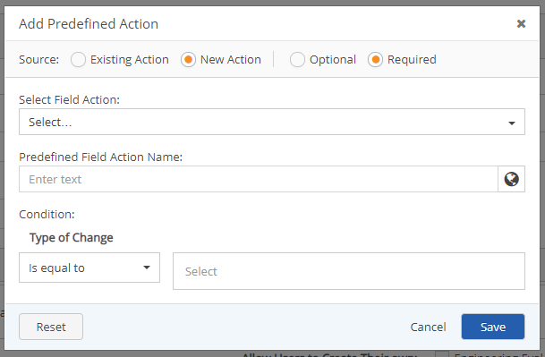
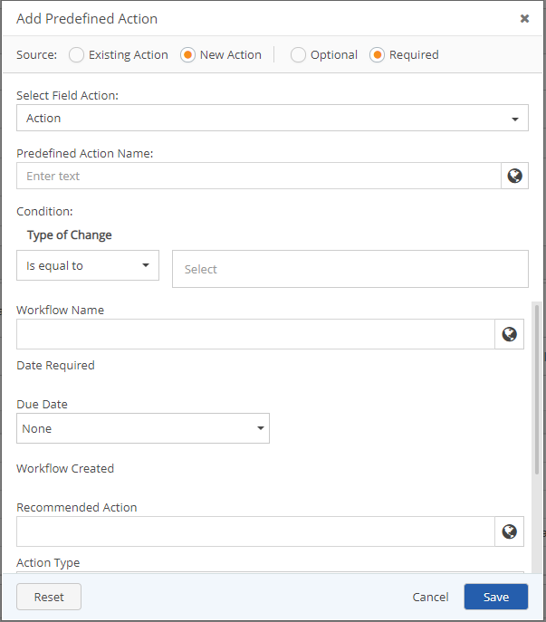
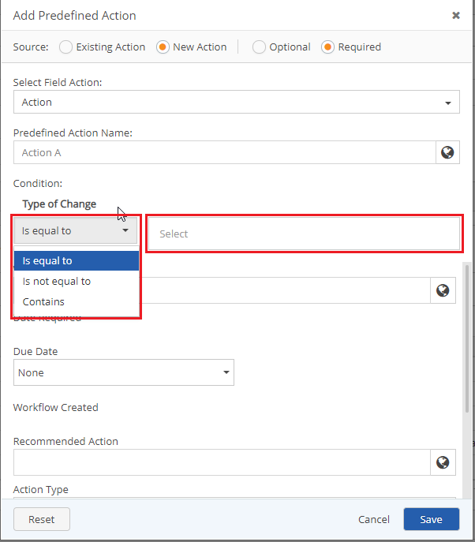

Creating a new action that is required, allows administrators to tailor new actions that users are required to follow as next actions for their specific situation or process when a condition is met.
On the Predefined Action window, in the source section, click New Action and Required .The Condition section appears.

Click Select Field Action drop-down text box, and then click a Field Action. Additional fields display in the Add Predefined Action window.
These fields will vary depending on the Field Action selected.

Type in the Predefined Action name, in the Predefined Action Name text box.
In the Condition section, under Type of Change select an if property from the If Condition dropdown menu.

To select a value for the if statement, click the textbox to the right of the If Condition drop down menu. A list of values appears.